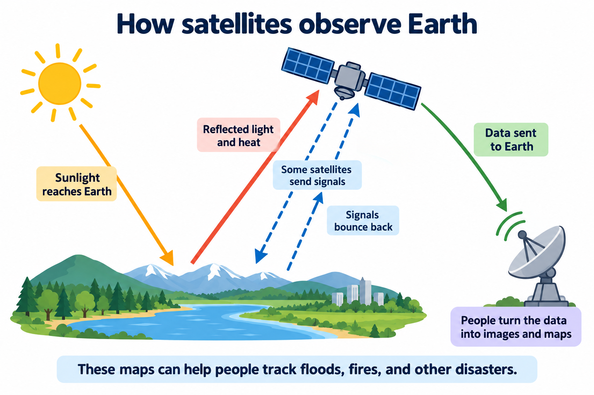
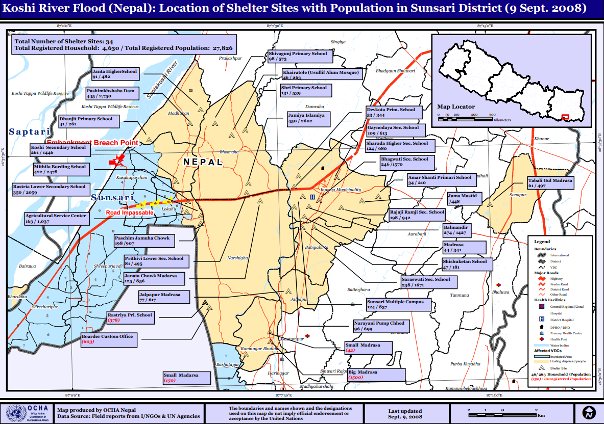

When the ground changes,
perspective changes everything.
A major disaster can change an entire region. For emergency workers, the first challenge is understanding where help is needed.
Roads may be damaged. Settlements may be cut off. Seeing the full extent of the damage from the ground can be difficult. Satellites offer another perspective: they gather information about Earth’s surface from space, helping teams see affected areas on a much larger scale.
In his research on Sentinel Asia, Kazuya Kaku examines how this information can help communities prepare for disasters, respond to emergencies, and recover afterward. His central argument reaches beyond the instruments in orbit: the people who operate and use these systems are just as important as the technology.
Remote sensing
Studying something from a distance, without touching it. Satellite instruments detect energy reflected or released by Earth, or send signals and measure what comes back.
Those measurements help researchers observe conditions on the ground. Some sensors capture reflected light; radar sensors send out their own signals. Different instruments bring different strengths, so the right observations depend on the task and conditions.
Why can’t every satellite see through clouds? +
Optical sensors depend on suitable light and clear views. Radar can gather observations through clouds and in darkness. The research describes the combined capabilities of satellite systems; an individual sensor does not do everything.
A satellite can collect data.
A network makes it useful.

Sentinel Asia was established in 2006 to support disaster management in the Asia-Pacific region. It brings together space agencies, disaster management organizations, universities, and other institutions, each contributing a different kind of expertise.
Space agencies provide observations. Specialists process the measurements and interpret what they show. Local organizations use the results to guide decisions. Online mapping tools help these groups share information about affected areas.
Kaku studies real examples of this cooperation, taking into account the disasters different countries face and the way local disaster management organizations work. Sentinel Asia itself developed in stages, gradually expanding its network of data providers, analysts, and users.
Better information needs a path from space to the people who can use it. THE RESEARCH’S CENTRAL IDEA, IN PLAIN LANGUAGE
One broken embankment.
Thousands of lives disrupted.
In August 2008, an embankment along Nepal’s Saptakoshi River broke. Water entered nearby settlements, turning a regional emergency into a challenge of access, information, and response.

The flood damaged a five-kilometer stretch of the East–West Highway and a bridge, disrupting transportation. Following requests from organizations in Nepal, the Japan Aerospace Exploration Agency (JAXA) used its Advanced Land Observing Satellite (ALOS) to observe the flooded region. Specialists identified inundated areas and provided the results to the Nepalese government.
Flood extent + census records
= a clearer picture of human impact.
A map of water shows where flooding happened. Add records of people and houses, and it becomes possible to estimate which communities, homes, and residents were affected.
Combining satellite observations with census information helped teams map affected communities and estimate the scale of the damage. These results could support rescue activities, recovery planning, and the distribution of relief payments.
The lesson is practical: a satellite image becomes more valuable when it connects with the information and decisions local organizations actually need.
Two more places. The same human connection.
Thailand FLOODING · 2010+
During the October 2010 floods, Thailand’s GISTDA used ALOS imagery to make inundation maps and report to the cabinet. Overlaying housing information helped count affected homes and inform government relief payments.
The Philippines PREPAREDNESS · SINCE 2009+
The Sentinel Asia Success Story brought together capacity building, hazard mapping, rainfall-based landslide warning work, and volcano monitoring. Maps of hazards around Mayon helped connect advance preparation with observations during an eruption and later revisions of lahar hazard maps.
Disaster support
doesn’t start at the disaster.
The research takes a holistic view: technology, local needs, support systems, and human relationships all matter. A staged approach helps the network grow while responding to what users need.
Explore how these ideas fit across the disaster cycle.
Build the network before you need it.
Emergency workers need to know satellite information is available and understand how to use it. Training, communication, hazard mapping, and continued cooperation help teams prepare before an emergency happens.
Technology sees.
People make
the difference.
Collecting information from space is only part of the process. People must process the measurements, interpret their meaning, and deliver useful results to emergency workers.
Reliable technology, training, and lasting cooperation make that connection possible. The real measure of a satellite system is how well its information helps the communities on the ground.
Revisit the big idea ↗What made the Nepal flood imagery more useful?
Behind the story.
This blog adapts translation for the following study.
The original researchKazuya Kaku · Satellite remote sensing for disaster management support: A holistic and staged approach based on case studies in Sentinel Asia · 2019↗